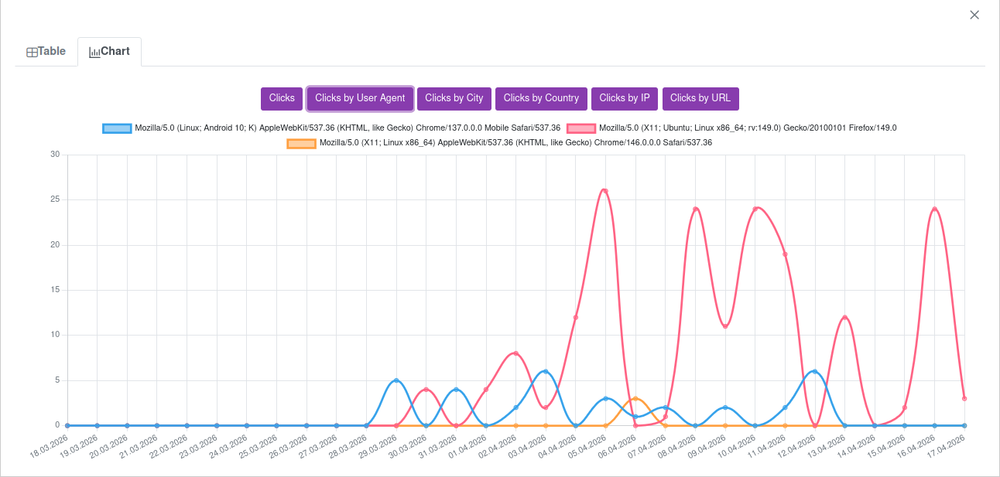

Track user behavior, analyze sessions, and improve your website performance
Open Activity ToolSimple setup • Works on any device • No installation

Monitor how users interact with your website in real time.
Track user sessions and understand navigation patterns.
Analyze user behavior to improve engagement and usability.
Log clicks, actions, and interactions across your website.
Gain insights into website performance and user journeys.
Worker24 also provides user activity monitoring tools for businesses that need visibility into how users interact with their websites.
This service helps website owners track behavior patterns, monitor user actions, and analyze engagement in a structured way.
With these monitoring features, businesses can better understand customer journeys, optimize user experience, and improve website performance.
This service is paid for all users.
Access costs only $0.1 per month.
After payment, you can view detailed statistics of user activity on your website.
To start collecting data, small changes are required on your website.
Detailed setup instructions are available in the Help section of the service.
Understand your users, improve your website, and make better decisions with real data.
Launch Activity Tool